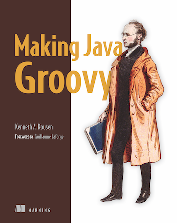
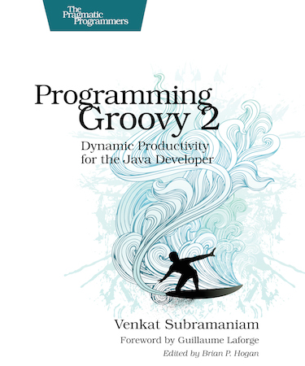
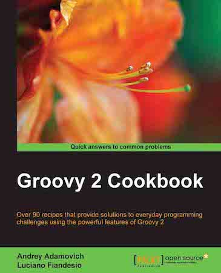
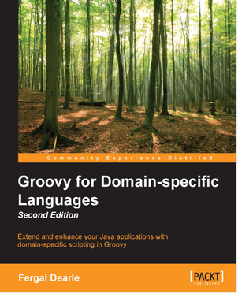
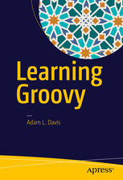

Welcome to the learning section of the Groovy website.
First of all, you will need to get started by installing Groovy on your system or project.
Once all set up, we invite you to have a look at the Groovy documentation, which explains all the details of the language, such as how to use the tools that come with a Groovy installation, and how to tackle more complex tasks with the various module user guides.
But there are other ways to learn more about Groovy, thanks to books and presentations given about Groovy at conferences.
Books
Another great approach to learning Groovy is to read the various books published on the language:

Groovy in Action, Second Edition
By Dierk K枚nig, Paul King, Guillaume Laforge, Hamlet D'Arcy, C茅dric Champeau, Erik Pragt, and Jon SkeetThe undisputed definitive reference on the Groovy programming language, authored by core members of the development team.
- 
Making Java Groovy
By Ken KousenMake Java development easier by adding Groovy. Each chapter focuses on a task Java developers do, like building, testing, or working with databases or restful web services, and shows ways Groovy can help.
- 
Programming Groovy 2
By Venkat SubramaniamDynamic productivity for the Java developer
- 
Groovy 2 Cookbook
By Andrey Adamovitch, Luciano FiandesoOver 90 recipes that provide solutions to everyday programming challenges using the powerful features of Groovy 2
- 
Groovy for Domain-Specific Languages - Second Edition
By Fergal DearleExtend and enhance your Java applications with domain-specific scripting in Groovy
Groovy Goodness Notebook
By Hubert A. Klein IkkinkExperience the Groovy programming language through code snippets. Learn more about (hidden) Groovy features with code snippets and short articles. The articles and code will get you started quickly and will give more insight in Groovy.
- 
Learning Groovy
By Adam L. DavisStart building powerful apps that take advantage of the dynamic scripting capabilities of the Groovy language. This book covers Groovy fundamentals, such as installing Groovy, using Groovy tools, and working with the Groovy Development Kit (GDK). You'll also learn more advanced aspects of Groovy.
Grails 3: A Practical Guide to Application Development
By Eric HelgesonThe first book dedicated to Grails 3. You will learn the concepts behind building Grails applications. Real, up-to-date code examples are provided so you can easily follow along.
Falando de Grails
By Henrique Lobo WeissmannFor Groovy and Grails developers, authored by the founder of Grails Brasil based on his experiences as a Groovy and Grails consultant.
Presentations
Many Groovy-related presentations have been recorded at conferences that you might wish to have a look at, to learn more about Groovy, delve into particular topics, and more.
Below are a few selected presentations given at Groovy-related conferences.


You can find more presentations:
Courses
Another great resource for learning Groovy is through a course. You could spend time hunting down various videos on the web but these courses have all the information you need packed into one place.